Density Functional Theory¶
Code author: Robert M. Parrish and Justin M. Turney
Section author: Robert M. Parrish
Module: Keywords, PSI Variables, LIBFUNCTIONAL, LIBFOCK, LIBSCF_SOLVER
Both density functional theory and Hartree–Fock theory are controlled through the SCF module, and the SCF Introduction section is also relevant here.
Theory¶
Generalized Kohn-Sham Density Functional Theory (KS-DFT) is one of the primary workhorses of modern computational chemistry due to its phenomenal accuracy/cost ratio.
Pure Kohn-Sham DFT is based on the ideas that A) the energy is a universal
functional of the one-particle electronic density and B) there exists a set of
noninteracting quasiparticles with the same density as the true set of
electrons, with the quasiparticle states determined as eigenvectors of an
effective one-body potential encapsulating the true  -body quantum
effects. The former idea allows the electronic density to be dealt with instead
of the much more complicated wavefunction, while the latter allows for the
treatment of the troublesome kinetic energy term via the implicit one-body
Kohn-Sham orbitals. KS-DFT borrows much of the machinery of Hartree-Fock, as is
evident by looking at the energy expression,
-body quantum
effects. The former idea allows the electronic density to be dealt with instead
of the much more complicated wavefunction, while the latter allows for the
treatment of the troublesome kinetic energy term via the implicit one-body
Kohn-Sham orbitals. KS-DFT borrows much of the machinery of Hartree-Fock, as is
evident by looking at the energy expression,
![E_{\mathrm{KS}}
&= \sum_{i} \langle i | \hat h | i \rangle
+ \frac 1 2 \sum_{i,j} [ii|jj] + E_{\mathrm{xc}} [\rho_\alpha, \rho_\beta] \\
&= D_{\mu\nu}^{\mathrm{T}}\left(T_{\mu\nu} +
V_{\mu\nu}\right) + \frac{1}{2} D_{\mu\nu}^{\mathrm{T}}
D_{\lambda\sigma}^{\mathrm{T}} (\mu\nu|\lambda\sigma) + E_{\mathrm{xc}} [\rho_\alpha, \rho_\beta]](_images/math/daa2fcba3ce12eeb73593570b35df5432f8ac4be.png)
Here  is the noninteracting quasiparticle kinetic energy operator,
is the noninteracting quasiparticle kinetic energy operator,
 is the nucleus-electron attraction potential,
is the nucleus-electron attraction potential,  is the total electron density matrix, and 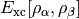 is the (potentially nonlocal) exchange, correlation, and residual
kinetic energy functional. The residual kinetic energy term is usually quite
small, and is often ignored, hence 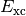 is often referred to
as simply the exchange-correlation functional (exchange and correlation, not
just exchange-type correlation).
is the total electron density matrix, and 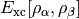 is the (potentially nonlocal) exchange, correlation, and residual
kinetic energy functional. The residual kinetic energy term is usually quite
small, and is often ignored, hence 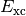 is often referred to
as simply the exchange-correlation functional (exchange and correlation, not
just exchange-type correlation).
In practice, the first few generations of KS-DFT functionals were chosen to be
local, meaning that the form of the exchange correlation energy is an integral
over all of space of a function depending only on local information in the
density, such as the density value or derivatives. The simplest variants are
Local Spin-Density Approximations (LSDA), which depend only on the spin density
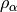 or  ,
,

The most popular variants are Generalized Gradient Approximation (GGA)
functionals which use the norm of the density gradient
 ,
,  or
or
 to build an inhomogeneity
parameter.
to build an inhomogeneity
parameter.


where,

GGA functionals are essentially the same cost as LSDA functionals, and are often considerably more accurate.
Another local variant which has gained some popularity (though perhaps not as
much as GGA functionals) is the meta approximation, in which information about
the second derivative of the density is incorporated. The most canonical variant
of these functionals rely on the spin kinetic energy density 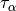
and  ,
,

A generic local meta-GGA functional may then be written as,

The potential corresponding to this energy functional is,

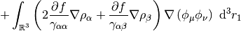
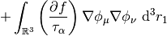
This potential is used to build the Kohn-Sham matrix,
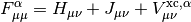
which is diagonalized to form the Kohn-Sham orbitals in the same manner as in Hartree-Fock.
In practice the local functional kernel  and its required
partial derivatives are exceedingly complex, and are not analytically
integrable. In this case, atom-centered numerical quadratures are used to
evaluate the Kohn-Sham potentials and energies to a high degree of accuracy. The
evaluation of these numerical integrals can be made to be linear scaling with a
reasonable amount of cleverness (mostly related to the fact that the basis
functions decay exponentially), meaning that the Coulomb and diagonalization
steps become rate limiting. This enormous potential speed gain over Hartree-Fock
with potentially exact treatment of electron correlation for “free” was one of
the primary motivations for KS-DFT’s adoption by chemists in the late 1980s and
early 1990s.
and its required
partial derivatives are exceedingly complex, and are not analytically
integrable. In this case, atom-centered numerical quadratures are used to
evaluate the Kohn-Sham potentials and energies to a high degree of accuracy. The
evaluation of these numerical integrals can be made to be linear scaling with a
reasonable amount of cleverness (mostly related to the fact that the basis
functions decay exponentially), meaning that the Coulomb and diagonalization
steps become rate limiting. This enormous potential speed gain over Hartree-Fock
with potentially exact treatment of electron correlation for “free” was one of
the primary motivations for KS-DFT’s adoption by chemists in the late 1980s and
early 1990s.
Unfortunately, local KS-DFT exhibits several spectacular failures, most of which stem from the exponential decay of the local Kohn-Sham potential, which cannot encapsulate long-range information in the exchange and correlation holes. In the exchange hole, this manifests as the problem of Many-Electron Self-Interaction Error (MSIE), which presents as spurious low-lying charge transfer states in excited-state calculations, eventual metallic breakdown in extended insulators, poor thermochemistry, and complete lack of a derivative discontinuity in the chemical potential as integer particle numbers are crossed. On the correlation side, this is primarily observed in the inability of KS-DFT to treat dispersion interactions.
Generalized Kohn-Sham (GKS) functionals incorporate long-range information into the functional through orbital-dependent contributions, and are designed to combat the failures of local KS-DFT, particularly the MSIE on the exchange side. Note that these functionals are often referred to as “implicit” density functionals, as the orbitals are themselves functionals of the Kohn-Sham potential.
The simplest form of an exchange-side GKS is the global hybrid ansatz, in which
some fraction of the exact Hartree-Fock exchange of the noninteracting
quasiparticles is added to the functional, with the local part of the exchange
functional decreased by the corresponding amount. Note that the term
“exact-exchange” refers to the Hartree-Fock being the exact exchange energy of
the noninteracting quasiparticles, not the true electrons. Therefore, adding
100% exact exchange is not physically reasonable, and will often lead to
extremely poor results. The fraction of exact-exchange, denoted  ,
is often determined by adiabatic or heuristic arguments, and is typically around
25%. The addition of exact exchange borrows another piece from an existing
Hartree-Fock code, with the caveat that Hartree-Fock exchange is often much more
costly to obtain than the Coulomb matrix. The global hybrid ansatz has become
exceedingly popular, with functionals such as the ubiquitous B3LYP often
producing absurdly accurate results.
,
is often determined by adiabatic or heuristic arguments, and is typically around
25%. The addition of exact exchange borrows another piece from an existing
Hartree-Fock code, with the caveat that Hartree-Fock exchange is often much more
costly to obtain than the Coulomb matrix. The global hybrid ansatz has become
exceedingly popular, with functionals such as the ubiquitous B3LYP often
producing absurdly accurate results.
A more advanced GKS functional technology which has developed enormous
popularity in recent years is the Long-Range Corrected (LRC) ansatz. LRC
recognizes that the local DFA is potentially exact at short range in the
exchange hole, and that the hybrid-exchange energy of the noninteracting
quasiparticles is also exact for true electrons at long range in the exchange
hole. Therefore LRC switches from DFA at short range to hybrid exchange at long
range, typically using the function  as a
partition function.
as a
partition function.
Tying all these pieces together, a full LRC-hybrid GKS functional has the generic form,
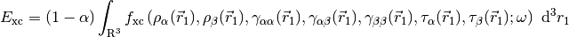


For LRC functionals, the choice of range-separtion parameter  has
been the subject of considerable activity since the inception of LRC
functionals. Some authors advocate a static range-separation parameter
determined by optimization over a test set of chemical systems. However, a more
physically-motivated and often more accurate approach is the idea of “gap
fitting” or “optimal tuning” or simply “tuning.” The most popular tuned-LRC
approach is IP-fitting, in which the is varied until the
Koopman’s IP (the opposite of the HOMO energy) matches the true IP (the
difference between 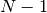-electron and -electron total
energies), within the LRC functional ansatz. This guarantees the asymptotics of
the exchange potential,
has
been the subject of considerable activity since the inception of LRC
functionals. Some authors advocate a static range-separation parameter
determined by optimization over a test set of chemical systems. However, a more
physically-motivated and often more accurate approach is the idea of “gap
fitting” or “optimal tuning” or simply “tuning.” The most popular tuned-LRC
approach is IP-fitting, in which the is varied until the
Koopman’s IP (the opposite of the HOMO energy) matches the true IP (the
difference between 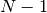-electron and -electron total
energies), within the LRC functional ansatz. This guarantees the asymptotics of
the exchange potential,

Note that LRC functionals with default only capture the
 dependence,
dependence,

hybrid functionals only capture part of the dependence,

and local functionals decay exponentially, resulting in completely incorrect asymptotics,

IP-tuned LRC functionals effectively pin the chemical potential at
electrons to the correct value determined by the ionization potential. This
often cleans up the MSIE problem for a surprisingly large number of high-lying
occupied orbitals, as determined by fractional particle curves. Other gap
fitting techniques involving the electron affinity or band gap are sometimes
also used. IP-fitting is found to be particularly critical for the qualitative
determination of excited state ordering in many low band-gap systems.
For dispersion-bound complexes, a very simple additive empirical dispersion potential, based on a damped Lennard-Jones potential can often produce remarkably accurate results with KS-DFT. This approach was championed by Grimme, whose “-D2” approach is a de facto industry standard. The more modern “-D3” approach is gaining popularity, and may supersede -D2 in the next few years.
Minimal Input¶
Minimal input for a KS-DFT computation is a molecule block, basis set option, and a call to energy('b3lyp') (or other valid functional name):
molecule {
He
}
set basis sto-3g
energy('b3lyp')
This will run a B3LYP Restricted Kohn-Sham (RKS) on neutral singlet Helium in
 spatial symmetry with a minimal STO-3G basis, 1.0E-8 energy
and density convergence criteria, a PK ERI algorithm, symmetric
orthogonalization, DIIS, and a core Hamiltonian guess. For more information on
any of these options, see the relevant section below, or in the Hartree-Fock
section above.
spatial symmetry with a minimal STO-3G basis, 1.0E-8 energy
and density convergence criteria, a PK ERI algorithm, symmetric
orthogonalization, DIIS, and a core Hamiltonian guess. For more information on
any of these options, see the relevant section below, or in the Hartree-Fock
section above.
Spin/Symmetry Treatment¶
PSI4 implements the most popular spin specializations of KS-DFT, including:
- Restricted Kohn-Sham (RKS) [Default]
- Appropriate only for closed-shell singlet systems, but twice as efficient as the other flavors, as the alpha and beta densities are constrained to be identical.
- Unrestricted Kohn-Sham (UKS)
- Appropriate for most open-shell systems, and fairly easy to converge.
The spatial parts of the alpha and beta orbitals are fully independent of each
other, which allows a considerable amount of flexibility in the wavefunction.
However, this flexibility comes at the cost of spin symmetry; the resultant
wavefunction may not be an eigenfunction of the
 operator.
However, spin contamination is usually less of a problem with UKS than with
UHF, as the spin contamination of the noninteracting quasiparticles (the
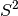 metric printed in the output) is usually a severe overestimation
of the spin contamination of the true electrons.
operator.
However, spin contamination is usually less of a problem with UKS than with
UHF, as the spin contamination of the noninteracting quasiparticles (the
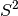 metric printed in the output) is usually a severe overestimation
of the spin contamination of the true electrons.
These are set in the REFERENCE option.
Note that there are not equivalents to ROHF or CUHF, e.g., no ROKS or CUKS. This is because ROHF is implicitly assumed to be followed by a correlated method which can break the positive definiteness of the spin polarization. KS-DFT with the true functional is expected to be the final step, thus restricting the solution to positive definite spin polarization is not physical. See the section in Szabo on methyl radical for an example.
Functional Selection¶
PSI4 features an extensive list of LSDA, GGA, Meta, Hybrid, LRC, and -D functionals. These can be specified by a variety of means. Perhaps the simplest is to use the functional name as the energy procedure call:
energy('b3lyp')
Note that if you are running an unrestricted computation, you should set the REFERENCE option before the call to energy:
set reference uks
energy('b3lyp')
The functional may also be manually specified by the DFT_FUNCTIONAL option:
set dft_functional b3lyp
energy('scf')
For hybrid functionals, the fraction of exact exchange is controlled by the DFT_ALPHA option. For the LRC functionals, the fraction of long-range Hartree-Fock and short-range DFA is controlled by the DFT_OMEGA option. Changing these will override the default behavior of the requested functional.
A brief summary of some of the more notable functionals in PSI4, and links to the complete listing of all functionals of each class are presented below:
- All Functionals
- All functionals, including LSDA-only functionals. Note that here and throughout, functionals which end in _X or _C are exchange or correlation only, and should not be used for most production-level computations. Examples include PBE_X and PBE_C, which contain the separate definitions of the PBE exchange and correlation holes. In most cases, the united PBE functional should be used instead.
- GGA Functionals
- Many common GGA functionals. BLYP and PBE are probably among the best pure GGAs. Please do not use FT97 at the moment, as there are problems with the stability of the correlation hole. Don’t worry, it will definitely NaN on you if you try to use it.
- Meta Functionals
- We have recently implemented the M05 classes of meta functionals in PSI4. Note that these functionals are not appropriate for modeling dispersion interactions, as they lack dispersion physics. A -D functional (Such as the much cheaper B97-D) should be used instead.
- Hybrid Functionals
- Many common hybrid functionals, including the ubiquitous B3LYP. PBE0 and the B97 series are also quite good for many thermochemical problems.
- LRC Functionals
- LRC functionals are a particular area of interest of the PSI4 DFT team. LRC functionals are all denoted by a lower-case “w” in front of the standard DFA functional, such as wPBE. We offer a stable implementation of the Gill association function for wS and Head-Gordon’s wB97/wB97X functionals. Additionally, we are pleased to have recently completed a heavily conditioned implementation of the HJS exchange-hole model, which provides an analytical form for the short-range enhancement factor for wPBE, wPBEsol, and wB88. From a physics perspective, this implementation of wPBE is extremely useful for theoretical investigations, as it is parameter free, and properly integrated against the partition function in the exchange hole. We would like to thank Dr. Scuseria for providing helpful advice and a reference implementations of the older HSE exchange-hole model which led to the successful implementation of the HJS model.
- -D Functionals
- We have several -D2 functionals implemented, and will shortly be adding many more combinations of -D2 and -D3 functionals. For now, the pure-GGA B97-D functional of Grimme is remarkably accurate, and the hybrid B3LYP-D functional is also quite reliable.
Note: we have made a sincere effort to rigorously test all functionals implemented in PSI4 for both numerical stability and correctness. If you observe any unexpected results, please email Rob Parrish (robparrish@gmail.com) for immediate assistance. Additionally, if you have a request for a new functional, please let us know.
Grid Selection¶
PSI4 uses the standard Lebedev-Laikov spherical quadratures in concert with a number of radial quadratures and atomic partitioning schemes. Pruned grids are not yet available, but will be implemented by RC1 (in final debugging). The default grid in PSI4 is a Lebedev-Treutler (302,99) grid with a Treutler partition of the atomic weights.
Spherical grids are all of the extremely efficient Levedev-Laikov type. Spherical grid resolution is controlled by the DFT_SPHERICAL_POINTS option, which may take one of the following values:
Points Order 6 3 14 5 26 7 38 9 50 11 74 13 86 15 110 17 146 19 170 21 194 23 230 25 266 27 302 29 350 31 434 35 590 41 770 47 974 53 1202 59 1454 65 1730 71 2030 77 2354 83 2702 89 3074 95 3470 101 3890 107 4334 113 4802 119 5294 125 5810 131
The spherical grids are rotated according to a common set of rules developed during the implementation of SG1. At the moment, the rules for tetrahedral, octohedral, and icosohedral systems are not complete, so there may be some ambiguity in the grid orientation for these systems. A complete grid orientation rule set will be available in RC1.
Radial grid types are controlled by the DFT_RADIAL_SCHEME option, which at the moment may be either TREUTLER or BECKE, while the number of radial points are controlled by the DFT_RADIAL_POINTS option, which is any positive integer (typically 50-100). The radial grids are “centered” on the Bragg-Slater radius of each atom, as described in Becke’s 1988 paper. If inaccurate integration is suspected in systems with anions or very diffuse basis functions, the DFT_BS_RADIUS_ALPHA option may be increased from 1.0 to a larger value to force the radial grid to span a larger extent in space. The MultiExp, Mura, and EM radial grids will be available in RC1.
The atomic weighting scheme is controlled by the DFT_NUCLEAR_SCHEME option, which may be one of TREUTLER, BECKE, or NAIVE. The faster Stratmann weighting scheme is under development, and will be available in RC1.
Once the molecular quadrature grid is built, the points are partitioned into blocks of points which are spatially close to each other. We use an octree algorithm for this procedure, which produces a good balance between spatial compactness of each block (which helps achieve linear scaling due to the exponential decay of the basis functions), and retaining a large number of points in each block (which helps keep the FLOP rate up by allowing for a reasonably large amount of BLAS3/BLAS2 work to form the densities and potentials in each block). For each block, a united set of significant basis functions is determined by the cutoff radius of each shell of basis functions. The size of this cutoff radius (and thereby the accuracy of the density/potential evaluation) can be varied by setting the DFT_BASIS_TOLERANCE, which defaults to 1E-12. We are still exploring optimizations of the octree algorithm and the basis cutoffs, but it is likely that significant speed gains may be realized by relaxing the basis cutoff tolerance, with negligible decrease in accuracy.
An example of a fully specified grid is as follows:
molecule {
H
H 1 0.7
}
set {
basis cc-pvdz
scf_type df
dft_spherical_points 590 # Often needed
dft_radial_points 99 # Often needed
dft_radial_scheme treutler # Rarely needed
dft_nuclear_scheme treutler # Rarely needed
dft_basis_tolerance 1.0E-11 # Can speed things up, but benchmark the error
}
energy('b3lyp')
ERI Algorithms¶
The ERI algorithms for the Coulomb and hybrid exchange are identical to those listed above for Hartree-Fock. However, for LRC functionals, the long-range exchange contributions to the Kohn-Sham matrix have only been implemented in the DF and DIRECT algorithms. The use of DF is highly recommended for KS-DFT, as the errors incurred by the density fitting approximation (in a proper -JKFIT auxiliary basis) are orders of magnitude smaller than the accuracy of any known functional.
IP Fitting¶
In collaboration with the Bredas group, we have developed an automatic procedure for IP fitting of LRC functionals, based on a modified Regula-Falsi method. To perform IP fitting, one simply calls the ip_fitting() Python macro, after setting up a standard LRC UKS computation. A representative example is:
memory 512 MB
molecule h2o {
0 1
O
H 1 1.0
H 1 1.0 2 104.5
symmetry c1 # IP fitting must be run in C1 symmetry
}
set {
reference uks # UKS, as we need to do neutral/cation
basis cc-pvdz
scf_type df
dft_functional wb97
}
# Arguments are molecule object, minimum omega, maximum omega
ip_fitting(h2o, 0.4, 2.0)
This performs IP fitting on water for wB97/cc-pVDZ with density fitting. A
number of neutral and cation single-point computations are run at various values
of , though the later iterations are much faster due to reuse of
the DF tensors, and starting from the neutral/cation orbitals of the previous
. The procedure can also be assisted by providing a tighter guess
for the bounds of . This small test case has a tuned
of 1.700, hence the bounds of 0.4 and 2.0. Larger systems,
particularly conjugated systems, will typically have an optimized
between 0.1 and 0.5.
Fractional Particle Curves¶
The behavior of the electronic energy and HOMO energy across fractional numbers
of electrons is extremely useful for elucidating the MSIE behavior of various
functional technologies. PSI4 features an efficient fractional-particle DFT
code, written into the UKS spin specialization. Due to a combination of DIIS and
reuse of integrals/guess orbitals across a range of fractional occupations, this
code is able to perform fractional occupation curves for systems with up to 60
atoms, across a wide range of the particle number .
Two python macros exist for this code. The first is frac_traverse(), which is used to investigate the fractional occupation behavior within one electron above and below the neutral. An example is:
memory 512 MB
molecule h2o {
0 1
O
H 1 1.0
H 1 1.0 2 104.5
symmetry c1 # FRAC jobs must be run in C1 symmetry
}
set {
reference uks # UKS, as we need to do all kinds of weird stuff
basis aug-cc-pvdz # Augmented functions are very important on the anion side
scf_type df
dft_functional wb97
}
# Argument is the molecule object.
# Many optional arguments are available, see the python file
frac_traverse(h2o)
The other macro is frac_nuke(), which strips several electrons out of the system to gather information on the MSIE over a range of orbitals. The input is identical to the above, except that the frac_traverse() call is substituted for something like:
# Argument is the molecule object.
# A useful optional argument is nmax, the total number of electrons to
# strip out of the molecule, in this case, 2.
# Many optional arguments are available, see the python file
frac_nuke(h2o, nmax = 2)
Note: this feature is new/powerful enough that we have several papers pending on it, and are interested in expanding this work. If you would like to publish results using this code, please contact Rob Parrish to make arrangements for collaboration.
Recommendations¶
The KS-DFT code is quite new, but relatively complete. During code development, emphasis was placed on flexibility of functional technology, efficiency for medium to large systems in difficult electronic environments (e.g., compact spatial extents, diffuse basis sets, low band-gaps, LRC and/or hybrid GKS functionals), and time to code completion. We are very interested in optimizing and extending the code, so expect performance gains and extensions to gradients/hessians and TDDFT in future releases.
Some rough guidelines for using the KS-DFT code are as follows,
- Use DF for the ERI algorithm wherever possible.
- PSI4 is a “tight” code, meaning we’ve set the default numerical cutoffs for integrals, grids, and convergence criteria in such a way that you will often get many more digits of precision than needed. You may be able to realize additional speed gains by loosening some of these thresholds.
- Read the literature to determine which functional technology to use. The world contains far too many papers using B3LYP on noncovalent interactions without a -D.
The “best-practice” input file for KS-DFT is:
memory 1 GB # As much as you've got, the DF algorithm can use
molecule {
H
H 1 0.7
}
set {
basis cc-pvdz
scf_type df
guess sad
}
energy('b3lyp')